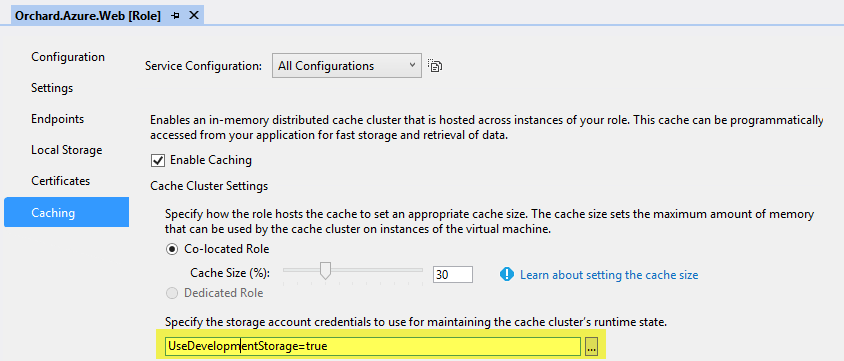
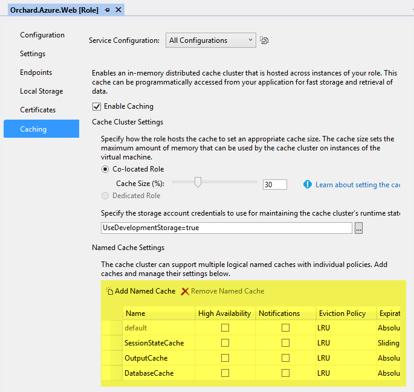
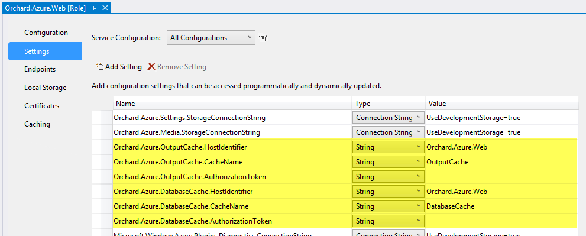
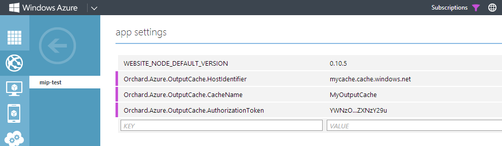
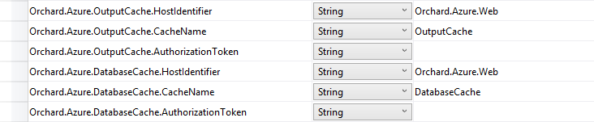

Windows Azure Caching is a distributed memory-based cache service that is part of Windows Azure. Orchard ships with two native providers for Windows Azure Caching, allowing Orchard to use Windows Azure Caching as the cache implementation for both output caching and database caching (NHibernate second-level caching). This topic describes how to configure and enable this functionality.
Windows Azure缓存是基于分布式内存的缓存服务，是Windows Azure的一部分。 Orchard附带了两个用于Windows Azure缓存的本机提供程序，允许Orchard使用Windows Azure缓存作为输出缓存和数据库缓存（NHibernate二级缓存）的缓存实现。本主题介绍如何配置和启用此功能。
Overview
概观
Support for Windows Azure Caching comes in the form of two features in the Orchard.Azure module:
对Windows Azure缓存的支持以“Orchard.Azure”模块中的两个功能的形式提供：
Orchard.Azure.OutputCache:
Name: Windows Azure Output Cache
Description: Activates an Orchard output cache provider that targets Windows Azure Cache.
Dependencies: Orchard.OutputCache
Category: Performance
Orchard.Azure.DatabaseCache:
Name: Windows Azure Database Cache
Description: Activates an NHibernate second-level cache provider that targets Windows Azure Cache.
Category: Performance
These two features can be enabled separately or in combination.
这两个功能可以单独或组合使用。
They both configure Orchard to use Windows Azure Caching as the cache implementation. This is primarily useful when running Orchard in a server farm configuration. As mentioned above, Windows Azure Caching is a distributed memory-based cache service. Without using some form of distributed cache, caches will become out of sync between the different nodes in your farm.
它们都将Orchard配置为使用Windows Azure缓存作为缓存实现。在服务器场配置中运行Orchard时，这非常有用。如上所述，Windows Azure缓存是一种基于分布式内存的缓存服务。如果不使用某种形式的分布式缓存，则缓存将在服务器场中的不同节点之间变得不同步。
Role-based Cache vs Cache Service
基于角色的缓存与缓存服务
Both features have been designed to work with both Windows Azure Role-based Caching and Windows Azure Cache Service. Role-based Caching can be used only from within a Windows Azure Cloud Service. Cache Service is called via public HTTP endpoints and can be used from anywhere, irrespective of hosting environment.
这两个功能都设计为与[Windows Azure基于角色的缓存]（http://msdn.microsoft.com/en-us/library/windowsazure/dn386103.aspx）和[Windows Azure缓存服务]（http： //msdn.microsoft.com/en-us/library/windowsazure/dn386094.aspx）。基于角色的缓存只能在Windows Azure云服务中使用。缓存服务通过公共HTTP端点调用，可以在任何地方使用，无论托管环境如何。
The caching providers are configured slightly differently depending on which flavor to use. See the Configuration reference section for more information.
根据要使用的风格，缓存提供程序的配置略有不同。有关详细信息，请参阅配置参考部分。
Enabling for Windows Azure Cloud Services
启用Windows Azure云服务
When deploying Orchard to a Windows Azure Cloud Service using the Orchard.Azure.sln solution, the resulting package is already preconfigured with everything required to enable the caching features. By default the cloud service project is configured for co-located role-based caching with 30% of the role instance memory allowed for cache usage.
使用“Orchard.Azure.sln”解决方案将Orchard部署到Windows Azure云服务时，生成的软件包已预先配置了启用缓存功能所需的所有内容。默认情况下，云服务项目配置为共存的基于角色的缓存，其中30％的角色实例内存允许缓存使用。
The only thing you need to change before deploying is the connection string of the storage account you want to use to maintain the cache cluster's runtime state:
在部署之前，您唯一需要更改的是要用于维护缓存集群的运行时状态的存储帐户的连接字符串：

- Open
Orchard.Azure.sln.
1.打开Orchard.Azure.sln。
- Navigate to
Orchard.Azure.CloudService, double click the roleOrchard.Azure.Webto bring up its property page, and navigate to the Caching tab.
2.导航到Orchard.Azure.CloudService，双击角色Orchard.Azure.Web打开其属性页面，然后导航到 Caching 选项卡。
- Configure the connection string of the storage account you want to use.
3.配置要使用的存储帐户的连接字符串。
- Deploy the cloud service.
4.部署云服务。
After deploying you can simply enable the features Windows Azure Output Cache and/or Windows Azure Database Cache in the admin dashboard.
部署后，您只需在管理仪表板中启用功能 Windows Azure输出缓存和/或 Windows Azure数据库缓存。
Customizing the configuration
自定义配置
You can customize any of the preconfigured settings according to your requirements. For example you might want to:
您可以根据需要自定义任何预配置的设置。例如，您可能想要：
-
Change the configuration from co-located to dedicated role-based caching by adding a dedicated caching role to the cloud service.
-
通过向云服务添加专用缓存角色，将配置从共存位置更改为专用的基于角色的缓存。 *
-
Change the expiration settings of the preconfigured named caches.
-
更改预配置的命名高速缓存的到期设置。 *
-
Use a different set of named caches.
-
使用一组不同的命名缓存。 *
-
Use Cache Service instead of role-based cache (even if you're running in a cloud service).
-
使用缓存服务而不是基于角色的缓存（即使您在云服务中运行）。 *
This can all be done by reconfiguring the cloud service project.
这可以通过重新配置云服务项目来完成。
To reconfigure the expiration settings or set of named caches, use the Caching tab of the cloud service project:
要重新配置过期设置或命名高速缓存集，请使用云服务项目的 Caching 选项卡：

Just remember that you must also reconfigure the provider settings to match whatever cache configuration you create, using the Settings tab of the cloud service project:
请记住，您还必须使用云服务项目的 Settings 选项卡重新配置提供程序设置以匹配您创建的任何缓存配置：

Enabling for Windows Azure Web Sites
启用Windows Azure网站
NOTE: When running Orchard in a Windows Azure Web Site only Cache Service can be used - using Role-based Cache is not possible.
注意：在Windows Azure网站中运行Orchard时，只能使用缓存服务 - 使用基于角色的缓存是不可能的。
Before the caching features can be enabled you must configure the URL and credentials of the cache clusters you want to use. This can be done either before deploying (in Web.config) or after deploying (in the Windows Azure management portal).
在启用缓存功能之前，必须配置要使用的缓存群集的URL和凭据。这可以在部署（在Web.config中）之前或在部署之后（在Windows Azure管理门户中）完成。
Configuring cache cluster settings before deploying:
在部署之前配置缓存集群设置：
- Open
Orchard.sln.
1.打开Orchard.sln。
- Navigate to
Orchard.Weband open theWeb.configfile.
2.导航到Orchard.Web并打开Web.config文件。
- For output caching, in the
<appSettings>element add the following settings:
3.对于输出缓存，在<appSettings>元素中添加以下设置：
* `Orchard.Azure.OutputCache.HostIdentifier`
* `Orchard.Azure.OutputCache.CacheName`
* `Orchard.Azure.OutputCache.AuthorizationToken`
- For database caching, in the
<appSettings>element add the following settings:
3.对于数据库缓存，在<appSettings>元素中添加以下设置：
* `Orchard.Azure.DatabaseCache.HostIdentifier`
* `Orchard.Azure.DatabaseCache.CacheName`
* `Orchard.Azure.DatabaseCache.AuthorizationToken`
- Deploy the web site.
4.部署网站。
Here's an example configuration:
这是一个示例配置：
<appSettings>
<!-- Output caching -->
<add key="Orchard.Azure.OutputCache.HostIdentifier" value="mycache.cache.windows.net" />
<add key="Orchard.Azure.OutputCache.CacheName" value="MyOutputCache" />
<add key="Orchard.Azure.OutputCache.AuthorizationToken" value="YWNzO...ZXNzY29u" />
<!-- Database caching -->
<add key="Orchard.Azure.DatabaseCache.HostIdentifier" value="mycache.cache.windows.net" />
<add key="Orchard.Azure.DatabaseCache.CacheName" value="MyDatabaseCache" />
<add key="Orchard.Azure.DatabaseCache.AuthorizationToken" value="YWNzO...ZXNzY29u" />
</appSettings>
In the above example, the same cache service is used for both types of caching, but different named caches (MyOutputCache and MyDatabaseCache, respectively). Of course you are also free to use completely different cache services if you like. Note that if you want to use the default cache instead of a custom named cache, the setting for CacheName is optional and can be omitted.
在上面的示例中，相同的缓存服务用于两种类型的缓存，但使用不同的命名缓存（分别为“MyOutputCache”和“MyDatabaseCache”）。当然，如果您愿意，也可以自由使用完全不同的缓存服务。请注意，如果要使用default缓存而不是自定义命名缓存，则CacheName的设置是可选的，可以省略。
Refer to the Configuration reference section for more details on how to configure each setting.
有关如何配置每个设置的更多详细信息，请参阅配置参考部分。
You can now enable the features Windows Azure Output Cache and/or Windows Azure Database Cache in the admin dashboard.
您现在可以在管理仪表板中启用功能 Windows Azure输出缓存和/或 Windows Azure数据库缓存。
Configuring cache cluster settings after deploying:
部署后配置缓存集群设置：
- Deploy the web site.
1.部署网站。
- In the management portal, navigate to your web site and select the Configure tab.
2.在管理门户中，导航到您的网站并选择 Configure 选项卡。
- For output caching, under App settings add the following settings:
3.对于输出缓存，在 App settings 下添加以下设置：
* `Orchard.Azure.OutputCache.HostIdentifier`
* `Orchard.Azure.OutputCache.CacheName`
* `Orchard.Azure.OutputCache.AuthorizationToken`
- For database caching, under App settings element add the following settings:
3.对于数据库缓存，在 App settings 元素下添加以下设置：
* `Orchard.Azure.DatabaseCache.HostIdentifier`
* `Orchard.Azure.DatabaseCache.CacheName`
* `Orchard.Azure.DatabaseCache.AuthorizationToken`
- Click Save.
4.单击保存。
Here's an example configuration:
这是一个示例配置：

Refer to the Configuration reference section for more details on how to configure each setting.
有关如何配置每个设置的更多详细信息，请参阅配置参考部分。
You can now enable the features Windows Azure Output Cache and/or Windows Azure Database Cache in the admin dashboard.
您现在可以在管理仪表板中启用功能 Windows Azure输出缓存和/或 Windows Azure数据库缓存。
Enabling for any other hosting
启用任何其他主机
To enable the features when running Orchard in any other hosting environment, use the Web.config method described above. Once the appropriate settings have been added to the <appSettings> element, can enable the features Windows Azure Output Cache and/or Windows Azure Database Cache in the admin dashboard.
要在任何其他托管环境中运行Orchard时启用这些功能，请使用上述的“Web.config”方法。将适当的设置添加到<appSettings>元素后，可以在管理仪表板中启用功能 Windows Azure输出缓存和/或 Windows Azure数据库缓存。
ConfigurationReference：#ConfigurationReference
Configuration reference
配置参考
Both Windows Azure Output Cache and Windows Azure Database Cache share the same configuration structure, differing only by a prefix added to each setting. The prefix is Orchard.Azure.OutputCache. or Orchard.Azure.DatabaseCache. respectively.
Windows Azure输出缓存和Windows Azure数据库缓存都共享相同的配置结构，区别仅在于添加到每个设置的前缀。前缀分别是“Orchard.Azure.OutputCache。”或“Orchard.Azure.DatabaseCache”。
These settings are read from platform configuration using the CloudConfigurationManager class, which means they can be configured either in cloud service role configuration settings, web site configuration settings or the <appSettings> element in Web.config.
使用[CloudConfigurationManager]（http://msdn.microsoft.com/en-us/library/microsoft.windowsazure.cloudconfigurationmanager.aspx）类从平台配置中读取这些设置，这意味着可以在云服务角色中配置它们配置设置，网站配置设置或Web.config中的<appSettings>元素。
| Setting | Description | ||||
|---|---|---|---|---|---|
HostIdentifier |
When using role-based caching, set this to the name of the cloud service role hosting the cache cluster. Auto discover will be used to resolve the cache cluster hostname at runtime. When using Windows Azure Cache Service, set this to the endpoint hostname of your cache service, e.g. fabrikam.cache.windows.net. |
||||
CacheName |
Set this to the name of a named cache, or leave blank to use the default cache. |
||||
AuthorizationToken |
When using Windows Azure Cache Service, set this to the authorization token used to connect to the cache service endpoint. |
Here's an example configuration using Web.config. This configures Windows Azure Output Cache to use the default cache on a Windows Azure Cache Service endpoint:
这是使用Web.config的示例配置。这会将Windows Azure输出缓存配置为使用Windows Azure缓存服务端点上的“default”缓存：
<appSettings>
<add key="Orchard.Azure.OutputCache.HostIdentifier" value="mycache.cache.windows.net" />
<add key="Orchard.Azure.OutputCache.CacheName" value="" />
<add key="Orchard.Azure.OutputCache.AuthorizationToken" value="YWNzO...ZXNzY29u" />
</appSettings>
Here's the default role configuration when deploying to a cloud service:
以下是部署到云服务时的默认角色配置：

Multi-tenancy configuration
多租户配置
For multi-tenancy scenarios each setting can optionally be prefixed with a tenant name followed by colon, such as SomeTenant:Orchard.Azure.OutputCache.HostIdentifier. Whenever the caching providers read configuration settings they will always first look for a setting specific for the current tenant, and if no such setting exists, fallback to the default non-prefixed setting.
对于多租户方案，每个设置可以选择以租户名称后跟冒号作为前缀，例如SomeTenant：Orchard.Azure.OutputCache.HostIdentifier。每当缓存提供程序读取配置设置时，它们将始终首先查找特定于当前租户的设置，如果不存在此类设置，则回退到默认的非前缀设置。
Here's an example Azure Web Site configuration with two tenants, both using output caching with a named cache OutputCache on the Windows Azure Cache Service, but each using its own cache service instance:
下面是一个示例Azure Web站点配置，其中包含两个租户，两者都使用输出缓存和Windows Azure缓存服务上的命名缓存OutputCache，但每个租户都使用自己的缓存服务实例：
<appSettings>
<!-- Settings for Tenant1 -->
<add key="Tenant1:Orchard.Azure.OutputCache.HostIdentifier" value="mycache1.cache.windows.net" />
<add key="Tenant1:Orchard.Azure.OutputCache.AuthorizationToken" value="YWNzO...ZXNzY29u" />
<!-- Settings for Tenant2 -->
<add key="Tenant2:Orchard.Azure.OutputCache.HostIdentifier" value="mycache2.cache.windows.net" />
<add key="Tenant2:Orchard.Azure.OutputCache.AuthorizationToken" value="FQdOS...ImNXFtSJ" />
<!-- Common settings -->
<add key="Orchard.Azure.OutputCache.CacheName" value="OutputCache" />
</appSettings>
Session state caching
会话状态缓存
In addition to output caching and database caching, session state storage is also sensitive to server farm scenarios, primarily in solutions where there is no session affinity in the load balancer. The load balancer used in Windows Azure Cloud Services is one example of this.
除了输出缓存和数据库缓存之外，会话状态存储对服务器场方案也很敏感，主要是在负载均衡器中没有会话关联的解决方案中。 Windows Azure云服务中使用的负载均衡器就是其中的一个示例。
For this reason the web role in the cloud service project (Orchard.Azure.Web) is preconfigured through Web.config to use an ASP.NET session state provider that targets Windows Azure Cache. While this provider is enabled, all session state is stored in the distributed cache. This means it is safe for the same user to end up at one farm node in one request and another farm node in the next request, without running the risk of losing her state.
因此，云服务项目（“Orchard.Azure.Web”）中的Web角色通过Web.config进行了预配置，以使用面向Windows Azure Cache的ASP.NET会话状态提供程序。启用此提供程序时，所有会话状态都存储在分布式缓存中。这意味着同一个用户可以安全地在一个请求中的一个服务器场节点和下一个请求中的另一个服务器场节点结束，而不会冒失去其状态的风险。
NOTE: This is not necessary when running Orchard in a Windows Azure Web Site as the load balancer here maintains session affinity using cookies.
注意：在Windows Azure网站中运行Orchard时不需要这样做，因为此处的负载均衡器使用cookie维护会话关联。
The preconfigured settings in Web.config when deploying to a cloud service is described below. To configure session state caching in any other hosting scenarios, you can modify your Web.config file accordingly before deploying.
下面介绍部署到云服务时“Web.config”中的预配置设置。要在任何其他主机方案中配置会话状态缓存，可以在部署之前相应地修改Web.config文件。
First, a configuration section is added:
首先，添加配置部分：
<configSections>
...
<section name="dataCacheClients" type="Microsoft.ApplicationServer.Caching.DataCacheClientsSection, Microsoft.ApplicationServer.Caching.Core" allowLocation="true" allowDefinition="Everywhere" />
</configSections>
Next, a cache client is configured:
接下来，配置缓存客户端：
<dataCacheClients>
<dataCacheClient name="DefaultCacheClient" useLegacyProtocol="false" connectionPool="true" maxConnectionsToServer="20">
<autoDiscover isEnabled="true" identifier="Orchard.Azure.Web" />
</dataCacheClient>
</dataCacheClients>
Finally, session state is configured to use the Azure Cache provider and the cache client defined above:
最后，会话状态配置为使用Azure Cache提供程序和上面定义的缓存客户端：
<sessionState mode="Custom" timeout="60" customProvider="CacheSessionStateProvider">
<providers>
<!-- Set the cacheName attribute to be the name of the configured logical cache to use for session state storage. -->
<add name="CacheSessionStateProvider" type="Microsoft.Web.DistributedCache.DistributedCacheSessionStateStoreProvider, Microsoft.Web.DistributedCache" cacheName="SessionStateCache" dataCacheClientName="DefaultCacheClient" applicationName="Orchard" />
</providers>
</sessionState>
The configuration of the session state provider can be customized by editing Web.config before deploying the cloud service. To disable the session state provider, simply comment out the above sections from Web.config before deploying the cloud service.
在部署云服务之前，可以通过编辑“Web.config”来自定义会话状态提供程序的配置。要禁用会话状态提供程序，只需在部署云服务之前从“Web.config”中注释掉上述部分。